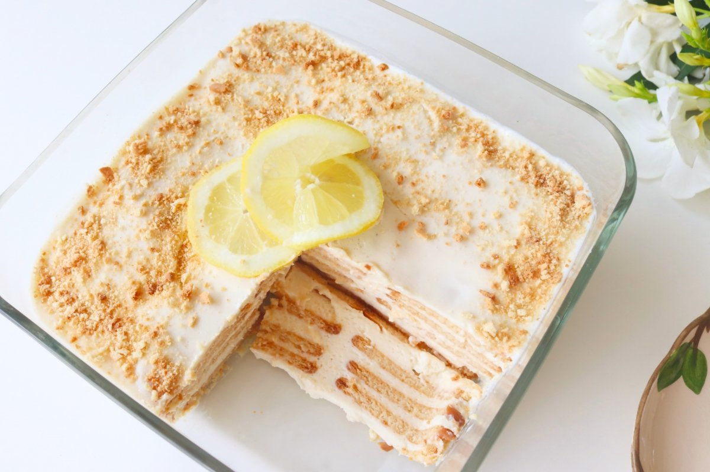

Mexican Lime Icebox Cake

Description
This Mexican Lime Icebox Cake, known as a carlota in Spanish, is
a cool, creamy no-bake treat that layers a cream filling with
crisp Maria Cookies. Here, we whisk together cream cheese,
condensed and evaporated milk with lime juice and zest to make
a refreshing citrus filling that’s set between the cookies.
Once assembled, we simply chill the cake in the refrigerator
overnight until the cookies absorb the flavors of the filling
and soften into a sliceable, cake-like consistency.
Ingredients
- 4 oz. reduced-fat cream cheese, at room temperature
- 1 can (14 oz.) of sweetened condensed milk
- 1 can (12 oz.) of evaporated milk
- 1/2 cup of lime juice
- 2 tsp. of lime zest (about 4 limes), plus more zest for
garnish
- 2 pkg. (7 oz.) of Maria cookies
Steps
- In a large bowl, stir together cream cheese and 2 tsp. lime
zest until blended. Using whisk, gradually whisk in
condensed milk until blended. Whisk in evaporated milk and
lime juice until smooth and thick. Using spoon, spread ½ cup
cream cheese mixture on bottom of 8” glass baking dish.
- Top cream cheese mixture with 9 Maria cookies, arranging in
single layer. Gently spread cookies with about ¾ cup cream
cheese mixture. Repeat layering 3 times more, using ¾ cup
cream cheese mixture and 9 cookies per layer, ending with
remaining cream cheese mixture. Cover cake with plastic wrap;
transfer to refrigerator. Chill at least 8 hours, or overnight.
Garnish cake with lime zest, if desired, before serving.